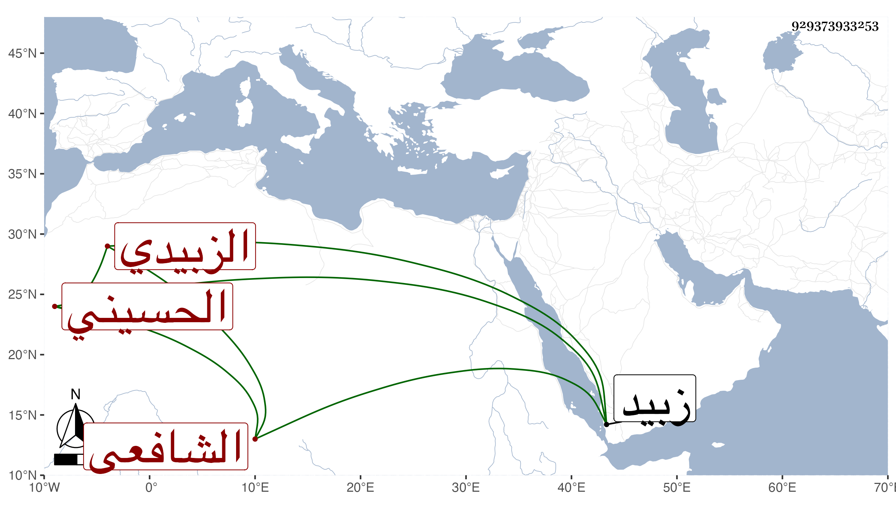

0902Sakhawi.DawLamic.ITO20230111-ara1.EIS1600.929373933253
Biography ID: 929373933253
940
محمد بن إبراهيم بن ناصر الجمال الحسيني بلدا ثم الزبيدي الشافعي . لازم الشرف بن المقري وقرأ عليه كثيرا من تصانيفه وتفقه عليه حتى كان من أجل تلاميذه وسمع منه وكذا من الفقيه موسى الضجاعي وبه تفقه أيضا ومن ابن الجزري ولم ينفك عن الاشتغال ليلا ونهارا حتى تقدم في الفقه وعلق أشياء مفيدة واختصر القوت للاذرعي والتفقيه للجمال الريمي ولم يكملها كاختصاره للجواهر للقمولي وتصدى للتدريس والإفتاء بزبيد وانتفع الناس به . مات في ربيع الثاني سنة أربع وخمسين وأرخه بعضهم سنة ثلاث وخمسين وبالأول كتب إلى حمزة الناشري وهو أشبه .
